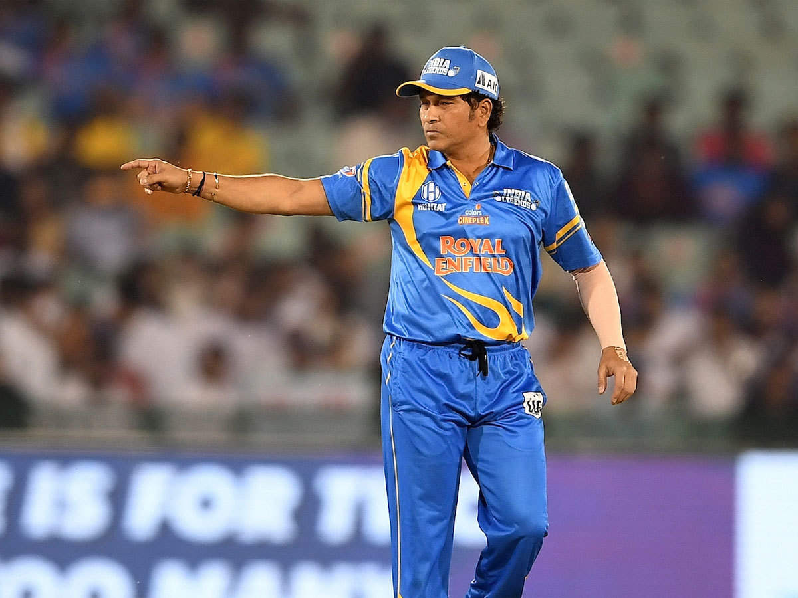
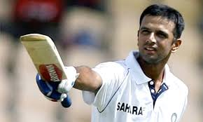
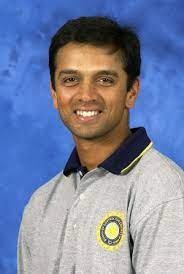
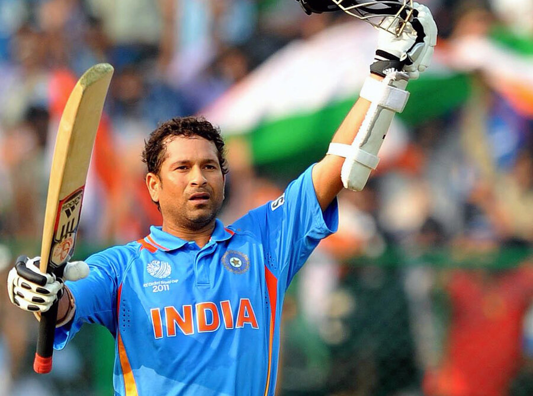

My hobby is to play cricket
The most popular game of the time is cricket .
Cricket has been a common sport in many contries.
England is the father of cricket
Cricket is the most popular game in India.
A team consists of 11 players.
Cricket matches are played in three ways ODI, Test, T20
The cricket pitch is of 22yards ,here the ball is thrown there are two wickets on both sides of it
The over is of six balls, the bowler has to throw six bowls in an over
The cricket feild is in an oval position and it also grows light hay grass .
The final line of the feild is called a boundary .
Before playing ,a toss is made between the two teams with a coin that determines who will be batting first or bowling first.
My hobby is to play cricket
Here are my few favourite cricketers

Rahul Dravid
Sachin Tendulkar
My Work
Rahul Dravid
Rahul Sharad Dravid born 11 January 1973) is a former Indian cricketer and captain of the Indian national team. He is the Director of Cricket Operations at National Cricket Academy, Bengaluru. He also monitors the progress of India A and India under-19 cricket teams.

Sachin Tendulkar
Sachin Ramesh Tendulkar born 24 April 1973) is an Indian former international cricketer who served as captain of the Indian national team. He is widely regarded as one of the greatest batsmen in the history of cricket.

My inspiration

Sachin Tendulker
Sachin Ramesh Tendulkar was that cricketer whose personality and aura upstaged any cricketing contest; yet he maintained that he wasn’t greater than than the game. To the people of India, the 5’5” giant of a man was much more than that. He was an emotion; a symbol of hope in a nation that revered him as nothing short of a God.
Ironically, in the midst of the over-the-top veneration and in spite of the pedestal he has been placed on, it is his humility and the ability to cast it all out that has allowed him to put forth his best performances on the international stage for over two decades. Having played across generations, Tendulkar started playing Test cricket in a white shirt that could just as easily have been used as a school uniform, and scored his last Test hundred in a niche Nike jersey that was impossible to buy over the counter, and would later be auctioned for millions.
Contact us
Moblie No. 9811039415